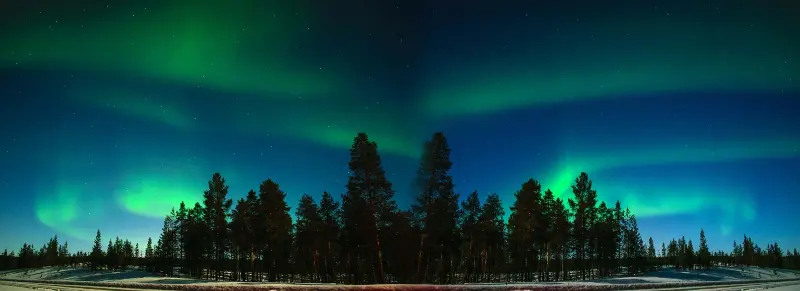
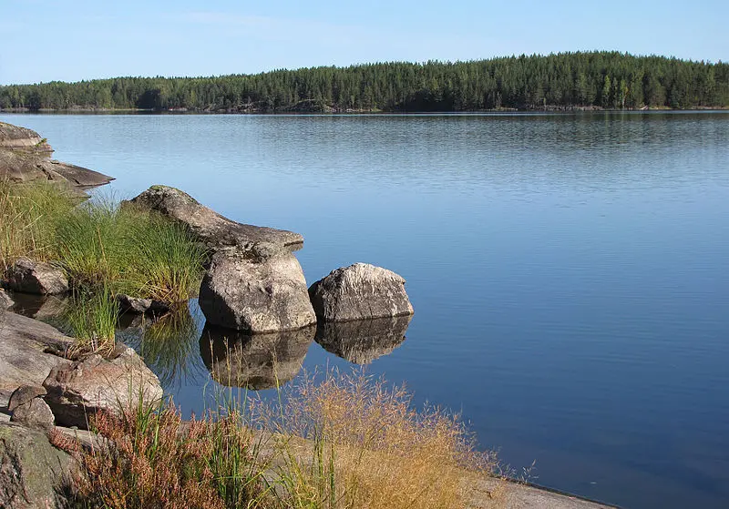
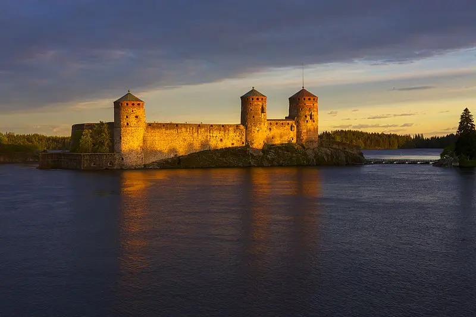
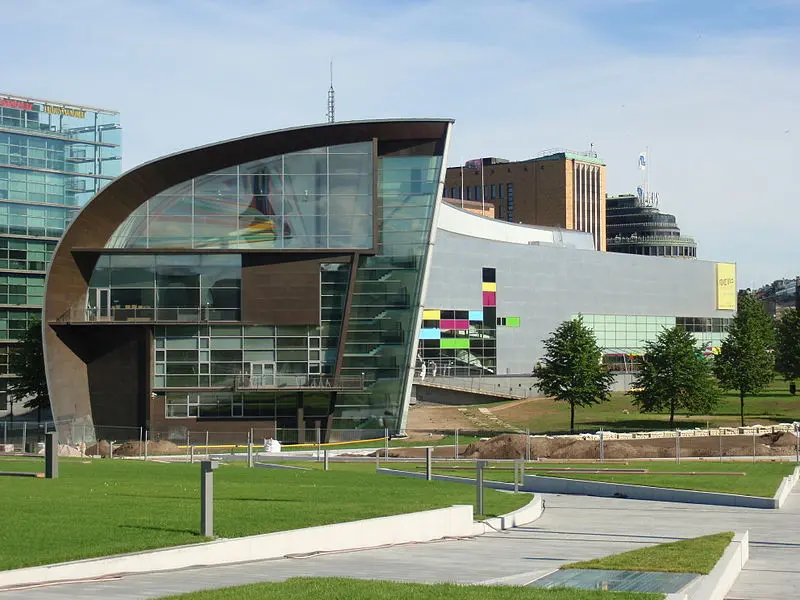

A Finlândia é um país com milhares de lagos e ilhas, 187.888 lagos e 179.584 ilhas, mais concretamente. Um destes lagos, o Saimaa, é o 5º maior lago da Europa. A paisagem finlandesa é predominantemente plana, com algumas colinas e montes baixos. O ponto mais alto do país, o Halti, com 1.328 m, encontra-se no extremo norte da Lapónia.
Cerca de 75% da área terrestre do país está coberto por Taiga (ou floresta boreal), com pouca terra arável, o tipo mais comum de rocha é o granito. A Morena é o tipo mais comum de solo, recoberto por uma fina camada de húmus de origem biológica.
Com isso, agora, conheça alguns pontos turísticos que você não pode perder:
Lapônia e suas Auroras Boreais
É uma região no norte da Escandinávia, que abrange território de quatro países: Noruega, Suécia, Finlândia e Federação Russa. É uma das regiões mais procuradas do mundo na época do Natal por tradicionalmente ser conhecida como a casa do Pai Natal.
Lago Saimaa em Lappeenranta
O Saimaa é o maior lago da Finlândia e o quinto maior na Europa, com uma área de 4.380 km². Está situado na parte sudeste do país. Cidades notáveis nas beiras de Saimaa são Lappeenranta, Imatra, Savonlinna e Mikkeli. O lago desagua principalmente no rio Vuoksi que flui para o lago Ladoga, completamente situado na Rússia.
Castelo de San Olaf
Castelo de San Olaf, ou Savonlinna, localiza-se na cidade de mesmo nome, na região lacustre de Olavinlinna, na Finlândia Oriental. Erguido a partir de 1475, é um dos castelos mais importantes do país, sendo o conjunto dominado por um imponente torreão, de planta circular.
Museu de Arte Contemporânea Kiasma, em Helsinque
Kiasma é um museu de arte contemporânea localizado em Mannerheimintie em Helsinque, Finlândia. Seu nome kiasma, finlandês para quiasma, alude à ideia conceitual básica de seu arquiteto, Steven Holl. Kiasma faz parte da Galeria Nacional Finlandesa e é responsável pela coleção de arte contemporânea da galeria. Seu objetivo central é exibir arte contemporânea e fortalecer seu status.